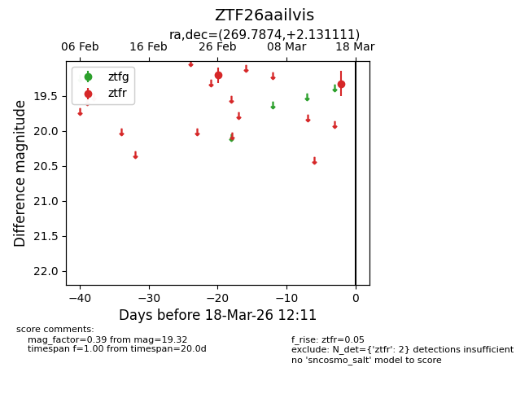
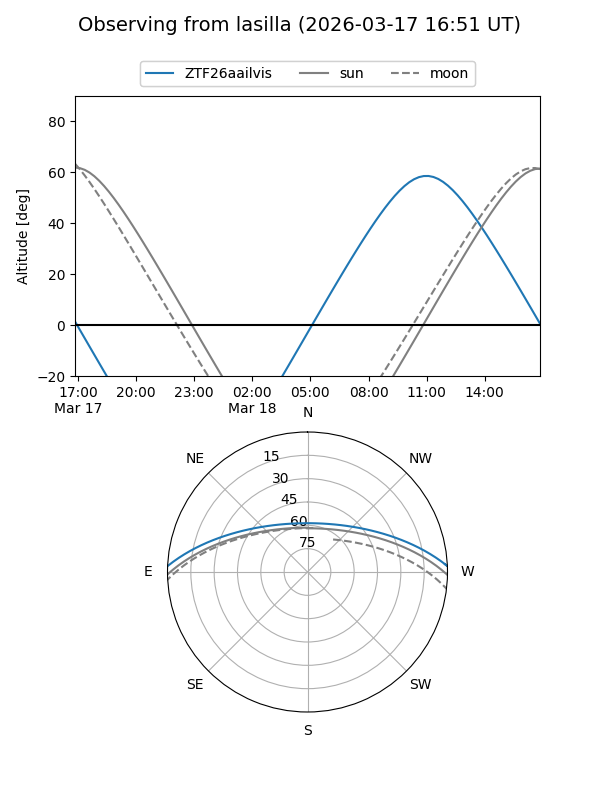
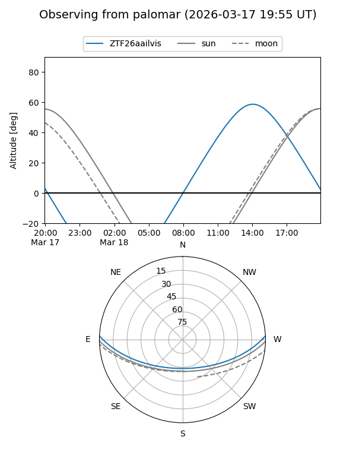
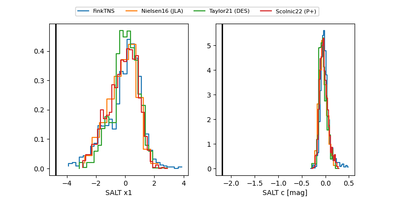

ZTF26aailvis
Target ZTF26aailvis at 2026-03-18 12:13
Aliases and brokers:
FINK: link
Lasair: link
ALeRCE: link
alt names
ZTF26aailvis (ztf,fink_ztf)
Coordinates:
equatorial (ra, dec) = 269.7874,+2.13111
equatorial (HMS+DMS) = 17:59:08.97,+02:07:52.00
galactic (l, b) = (28.8207,+12.59816)
Flags:
Photometry:
last ztfr=19.32
2 ztfr detections
Lightcurve

Visibility


Additional plots
